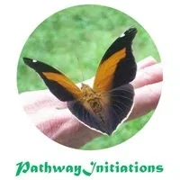
Pathway...
a transformational gameworld
- The Pathway... - ...is made when you paddle - ...mutually empowering Torus of adult and archetypal initiatory processes - You are a beautiful Being. How can we help you bloom? - We're a bunch of edgeworkers just like you. We've been secretly working for decades developing authentic adulthood and archetypal initiatory processes that turn on your inner resources and connect you to incredible outer resources.- The thing is that these initiations actually work.- We support you unfolding your potentials and bringing your visions to life.- We think that the new gameworlds we help each other build will give humanity a brighter future than it now has.
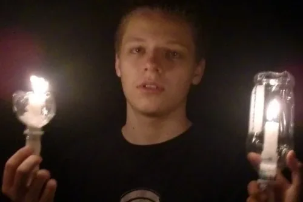
- Initiation... - " - For thousands of years human beings have been trying to gain ascendancy over their emotional impulses. The secret, of course, is not to eliminate emotion from life but to channel it where it is healthy and sane: sex, love, good will, enthusiasm, alertness, personality, and so on."- - A. E. van Vogt 1943 in his book: - The Weapon Makers, Chapter 17- And so begins your initiations... - The 5-day intensive authentic adult and archetypal initiatory processes of Pathway are transformational. - What do we mean by transformational? It means we upgrade your thoughtware. - Your - thoughtwareis what you use to think with.- Changing what you know changes what you can think about. - Changing your thoughtware - what you think with - changes who you are. - Pathway training spaces are called into existence in the service of the Bright Principles of Integrity, Clarity, Possibility, Empowerment, Love, Initiation, and High Level Fun. - Pathway applies the thoughtware, tools, distinctions, and processes of - Possibility Management, a context derived by taking radical responsibility.- Inner Permaculture is also the practical application Possibility Management. - Possibility Management was originated by Clinton Callahan in 1975 and has been developed and deepened ever since. It is written about, in part, in his books: - Radiant Joy Brilliant Love(in German:- Wahre Liebe im Alltag),- Directing the Power of Conscious Feelings- Die Kraft des bewussten Fühlens- Goodnight Feelings- Gute Nacht Gefühle- Additional Possibility Management based trainings such as - Expand The Box, which is prerequisite to- Possibility Labs,are described and offered at- http://www.possibilitymanagement.org.- Pathway delivers initiatory processes in all 5-bodies: - physical body - intellectual body
- emotional body
- energetic body
- archetypal body Additional elements of Pathway include:- Meditation, Presence and Introspection skills.
- Physical exercises and Technopenuriaphobia (TPP) healing.
- Communication skills, Listening and Speaking skills.
- Torus Technologyimplementation.
- Cooking and Sacred spaces.
- Radical responsibility for stories, High Drama vs. Low Drama.
- Problem and Conflict resolution skills, owning your Gremlin.
- Centering skills.
- Strengthening attention and intention.
- Taking back your own authority, your own voice, your own space, your own attention, your own feelings, your own center, and your own abilities to Declare, Choose, and Ask.
- Negotiating 5-body Intimacies.
- Journey into the Earth.
-
Igniting your inner archetypes and preparing you to jack-in to your Archetypal Lineage.
-
Our Amazing Events
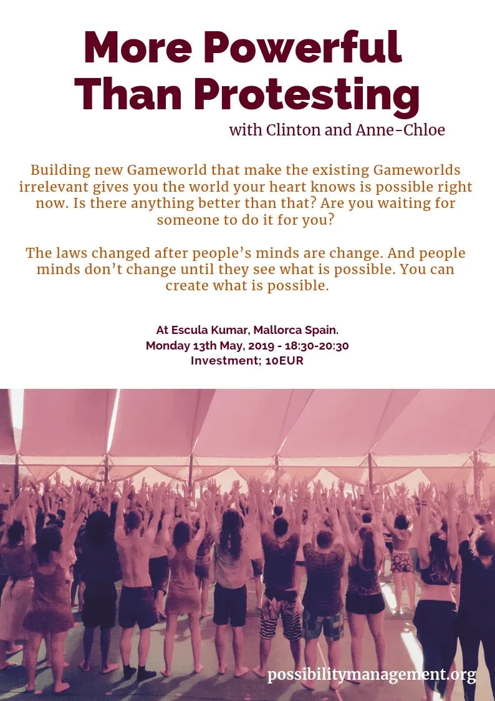
- Work-Talk: More Powerful Than Protesting - Monday 13th May 2019, 18:30-20:30 - Donation based (approx. 10EUR)- Building new Gameworlds that make the existing Gameworlds irrelevant gives you the World Your Heart Knows is Possible right now. Is there anything better than that? Are you waiting for someone to do it for you? - The laws changes after people's minds are changed. And people's minds don't change until they see what is possible. You can create what is possible. - with Clinton Callahan and Anne-Chloe Destremau - at Escula Kumar, Mallorca, Spain.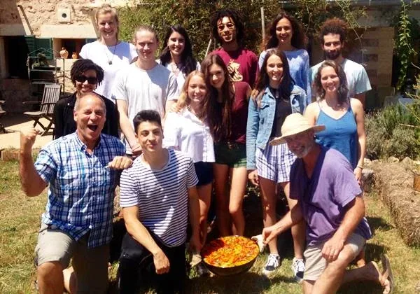
- Pathway I Origination Meeting - Escula Kumar, Mallorca, Spain - 17 June 2018 - Collaborators - #### We've got a top notch team!
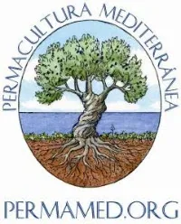
- PermaMed - Promotion of regenerative systems, permaculture design and other tools for a better life in Mediterranean bio-regions.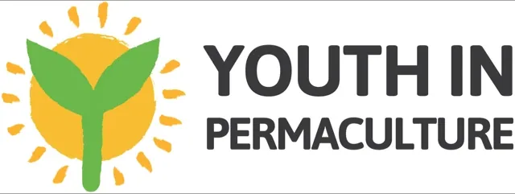
- Youth in Permaculture - YIP is a new initiative to support and empower youths and young adults to create resilient, fulfilling and fun lives inspired by permaculture. - Escola Kumar - The Escola Kumar is an active center of holistic life where creative and practical ways to share a sustainable, holistic, and conscious life and education for the whole community are made visible and experienced.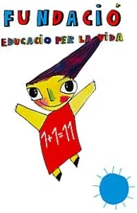
- Fundacio Educacio Per la Vida - A movement of people that inspires, encourages and creates local actions for caring for the Earth, the soul and society since 1998. - Resources - Your mind is yours to play with and make into whatever you want. - Right? - Or whose mind is it? - What we've learned the hard way is that your mind needs to understand the necessity of initiation or it won't cooperate, it won't decide to dedicate the time, energy, and money resources required to engage authentic initiatory processes. - Once you understand what is going on... nothing can stop you. - Understanding grows through study and introspection. - Below we list powerful resources to prepare you for your next step in Pathway...
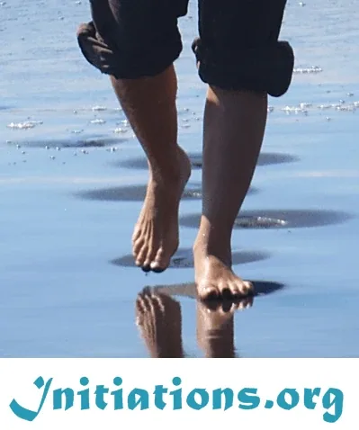
- Initiations - From - Stephen Jenkinson's new book,- Die Wise- " - Being born, or surviving school, or becoming a senior does not make you a human being. If it is true that humanity is a skill and not a right, then there are very few people among us who are mentors and teachers of the epic skill of being human. This means that modern culture is inundated with fifty-year-old adolescents who in their peak earning years are taking as much as they can for themselves and their loved ones... This does not have the makings of an inevitably good outcome for anyone."- This website provides clear distinctions about what initiation is and is not, plus offers links to some initiators who we can stand behind.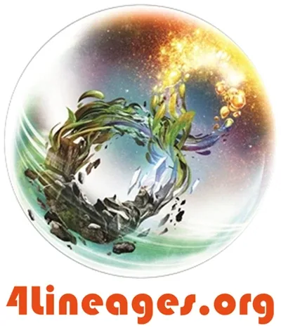
- 4 Archetypal Lineages - You do not automatic serve your Archetypal Lineage. It takes preparation and initiation. Your destiny is optional. How do you choose it?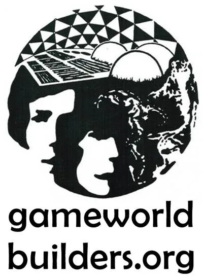
- Gameworld Builders - To paraphrase R. Buckminster Fuller, - "You do not change things by fighting existing gameworlds. You change things by creating a new gameworld that makes existing gameworlds irrelevant."- You've probably heard: - "Build it and they will come."- What you might not have heard is: - "If you don't build it, nobody even has a chance to come!"- You can learn gameworld building skills! - Do not be left behind playing in a stupid gameworld. Make your own. - Start Over Game - A massively-multiplayer online-and-offline personal development game. - This game is brand new and still in its starting phase, but stay tuned for a rapidly expanding bubble net! - Distinctionary - A dictionary of distinctions from Possibility Management for upgrading your thoughtware.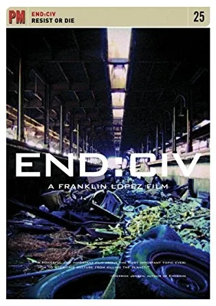
- Films to Watch: - Princess Bride- Accepted(deutsch S.H.I.T.)- My Dinner With Andre- Don Juan DiMarco- Meetings With Remarkable Men- Tomorrowland- As It Is In Heaven- Finding Neverland- V for Vendetta- DOCUMENTARIES - Trashedwith Jeremy Irons- The Corporation- END:CIV - Resist or Die - Books to Read: - Diamond Ageby Neal Stephenson- Daemon / Freedomby Daniel Juarez- Ender's Gameby Orson Scott Card- Duneby Frank Herbert- Mount Analogby René DaumalHANDBOOKS- Creatingby Robert Fritz- Die Wiseby Stephen Jenkinson- Original Wisdomby- Robert Wolff- Of Water and the Spiritby Malidoma Patrice Somé- Conscious Feelingsby Clinton Callahan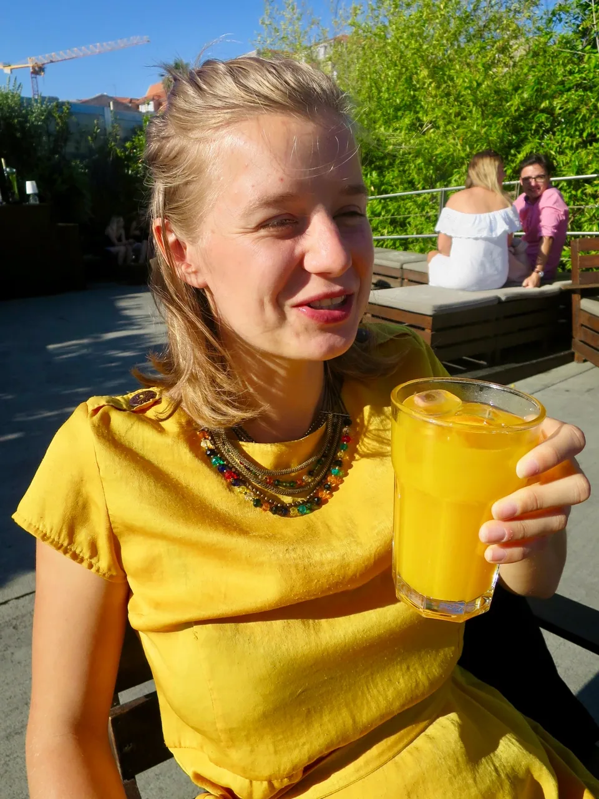
- Anne-Chloé Destremau - Possibility Management Trainer from France and New Zealand, Masters International Arbitration and Litigation, Pathway Trainer.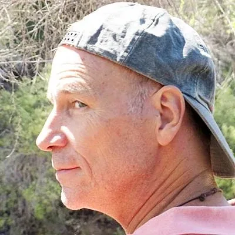
- Clinton Callahan - Possibility Management Trainer from USA and Germany, Bachelors Physics, Pathway Trainer. - It is time to find out who you are... - You can learn to profoundly listen to another person.
-
Gallery- #### Photos of our authentic adulthood and archetypal initiation processes.
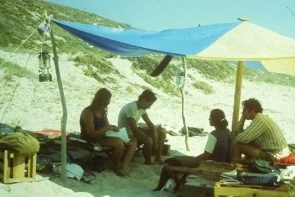
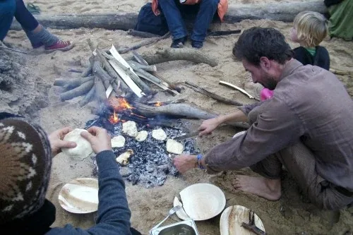
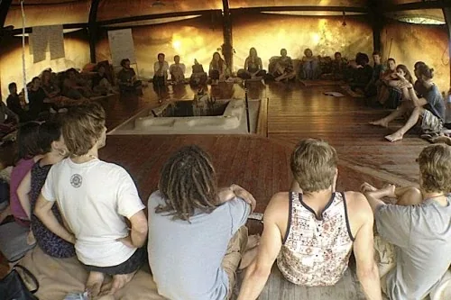
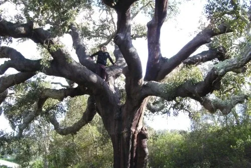
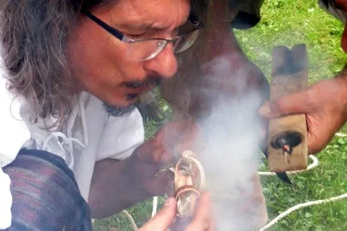
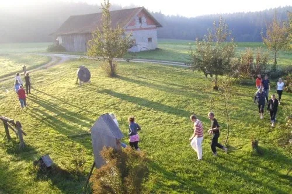
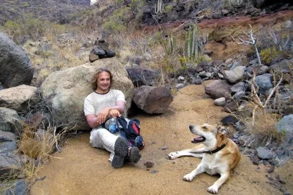
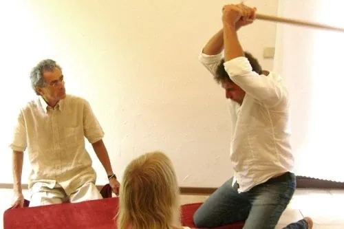
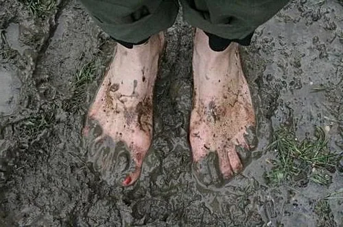
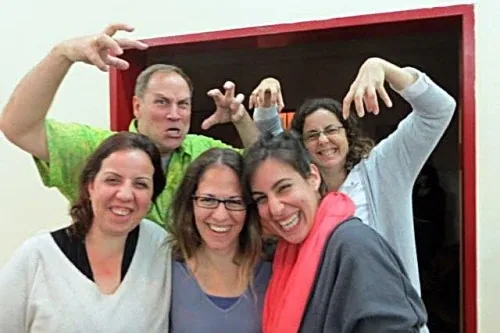
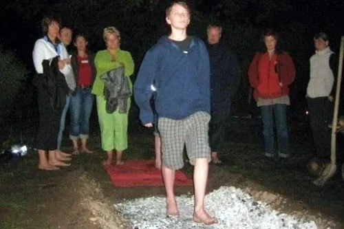
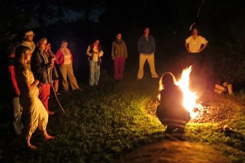
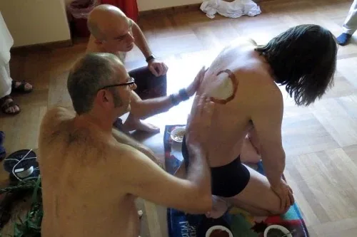
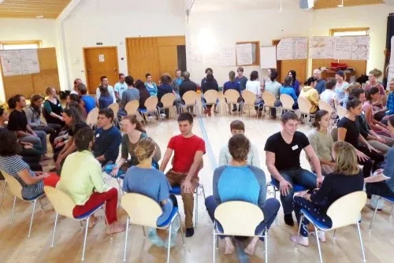
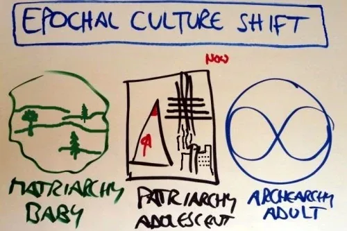
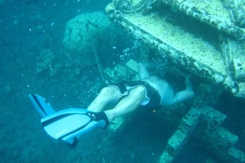
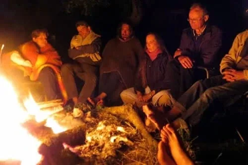
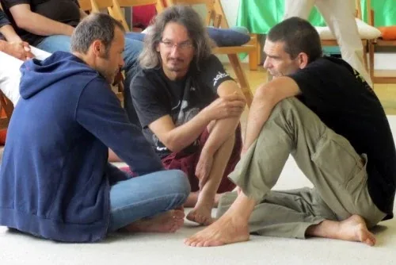
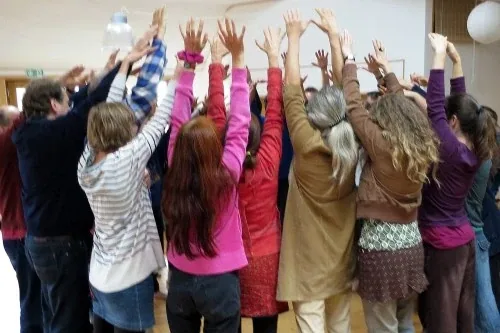
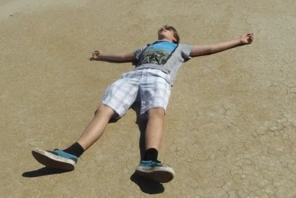
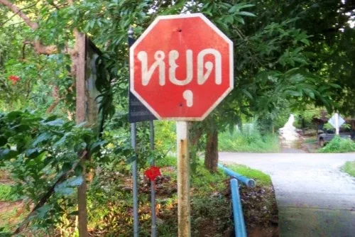
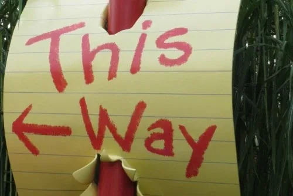
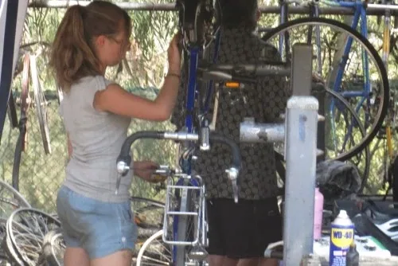
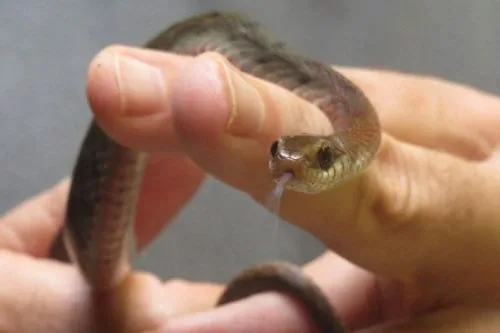
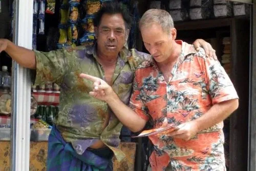
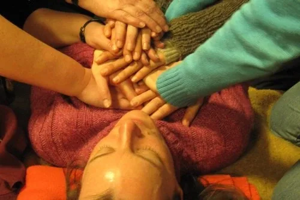
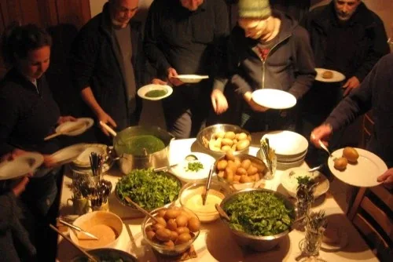
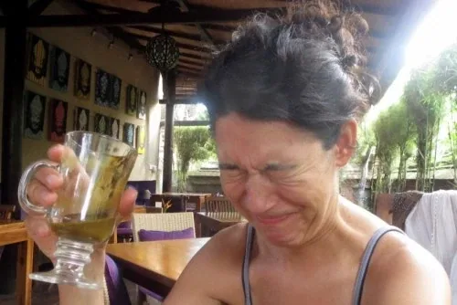
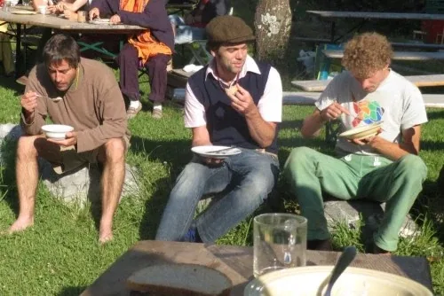
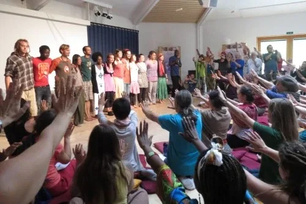
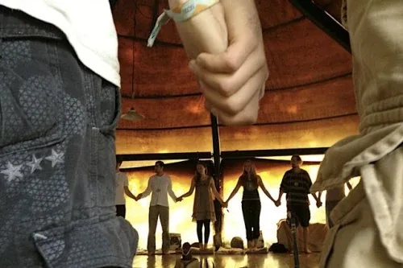
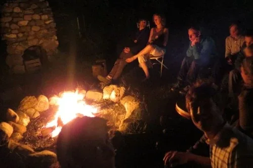
 - NOTE:This website is a- Bubble in the Bubble Map- StartOver.xyz- doorway- experiments- upgrade your thoughtware- point of origin- create- possibility- knowledge- about. Your- thoughtware- with. When you- change your thoughtware- liquid state- reorganizes- feelings- emotions- upgrading your thoughtware- build matrix- consciousness (archived — not captured)- low drama- reactivity- collectively build- responsibly- PATHWAYx.00to log your Matrix Point for reading this website on- StartOver.xyz
- NOTE:This website is a- Bubble in the Bubble Map- StartOver.xyz- doorway- experiments- upgrade your thoughtware- point of origin- create- possibility- knowledge- about. Your- thoughtware- with. When you- change your thoughtware- liquid state- reorganizes- feelings- emotions- upgrading your thoughtware- build matrix- consciousness (archived — not captured)- low drama- reactivity- collectively build- responsibly- PATHWAYx.00to log your Matrix Point for reading this website on- StartOver.xyz